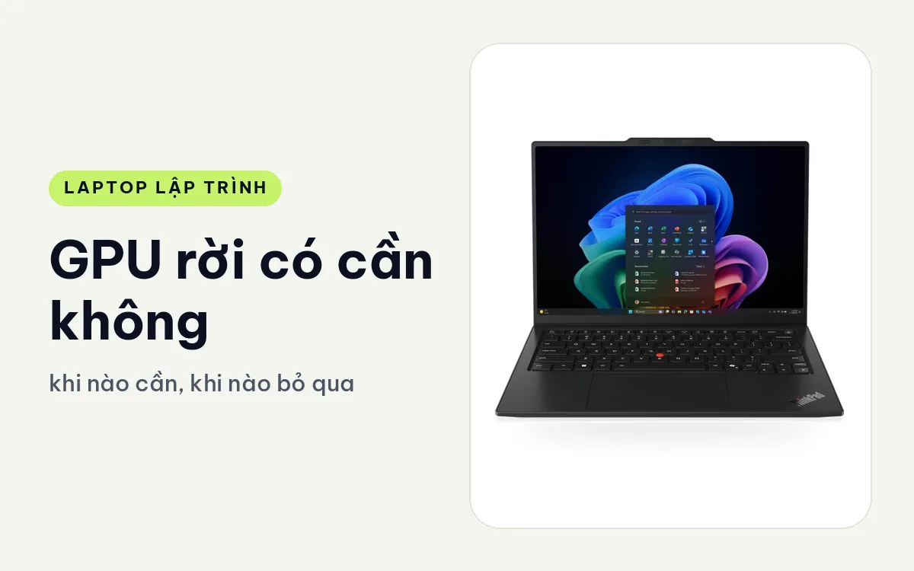
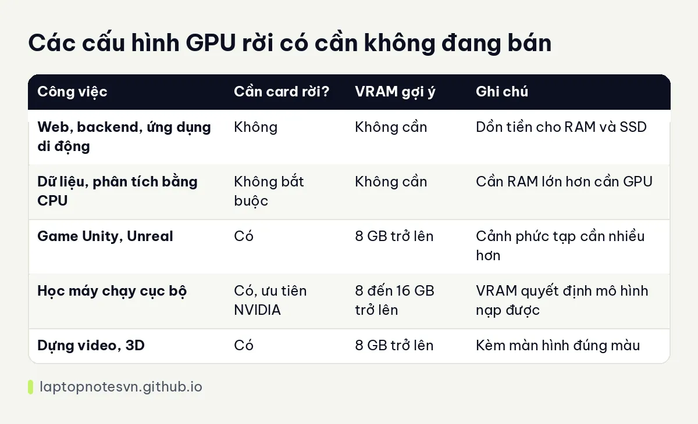

GPU rời có cần cho lập trình không - khi nào cần, khi nào bỏ qua

Nhiều người mua laptop lập trình bị cuốn vào nhãn card đồ họa rời, nghĩ rằng có RTX thì code nhanh hơn. Thực tế, với đa số công việc lập trình, card rời không tạo khác biệt. Nó làm máy nặng hơn, nóng hơn, pin ngắn hơn và đắt hơn. Nhưng với một số công việc, nó lại là thứ không thể thiếu.
Bài này chỉ rõ trường hợp nào cần card rời, trường hợp nào bỏ qua, VRAM bao nhiêu là đủ cho từng việc và các máy đang bán thuộc nhóm nào. Số VRAM bên dưới là kinh nghiệm tư vấn, tùy phần mềm và dữ liệu cụ thể.
Công việc không cần card rời
Lập trình web, backend, ứng dụng di động, script tự động, dữ liệu cỡ vừa, tất cả đều chạy bằng CPU. Trình soạn code, trình duyệt và Docker không dùng GPU để tính toán. Đồ họa tích hợp trong chip hiện đại đã đủ hiển thị màn hình, kể cả hai màn hình ngoài.

Chip có đồ họa tích hợp khá, như dòng Arc trong các chip Core Ultra, còn xử lý được video mã hóa, giải mã và vài tác vụ đồ họa nhẹ. Với người chỉ code, tiền dành cho card rời nên chuyển sang RAM nhiều hơn hoặc SSD lớn hơn.
Công việc cần card rời
Làm game bằng Unity hoặc Unreal là nhóm đầu tiên. Cảnh 3D, shader, ánh sáng đều chạy trên GPU, và VRAM là giới hạn quan trọng. Nhóm thứ hai là học máy: huấn luyện hoặc chạy suy luận cục bộ mô hình cần card NVIDIA vì phần lớn thư viện dựa trên CUDA, và VRAM quyết định mô hình nào nạp vừa.

Nhóm thứ ba là đồ họa và video: dựng phim, hiệu ứng, kết xuất 3D. Nhóm thứ tư là tính toán khoa học dùng GPU. Với các nhóm này, card rời mang lại khác biệt rất lớn, nhiều khi từ không dùng được thành dùng được.
Về VRAM, 6 đến 8GB đủ cho game cỡ vừa, mô hình nhỏ và dựng video cơ bản. 12 đến 16GB hợp mô hình lớn hơn và cảnh 3D phức tạp. Các số này chỉ là điểm xuất phát, bạn nên đối chiếu yêu cầu của phần mềm cụ thể mình dùng.
Nếu bạn quan tâm riêng đến học máy và mô hình ngôn ngữ chạy cục bộ, hãy đọc NPU trên laptop dev dùng được gì để biết ranh giới giữa NPU và GPU.
Bảng ghi nhớ nhanh

| Công việc | Cần card rời? | VRAM gợi ý | Ghi chú |
|---|---|---|---|
| Web, backend, ứng dụng di động | Không | Không cần | Dồn tiền cho RAM và SSD |
| Dữ liệu, phân tích bằng CPU | Không bắt buộc | Không cần | Cần RAM lớn hơn cần GPU |
| Game Unity, Unreal | Có | 8 GB trở lên | Cảnh phức tạp cần nhiều hơn |
| Học máy chạy cục bộ | Có, ưu tiên NVIDIA | 8 đến 16 GB trở lên | VRAM quyết định mô hình nạp được |
| Dựng video, 3D | Có | 8 GB trở lên | Kèm màn hình đúng màu |
Đồ họa tích hợp và card rời khác nhau thế nào
Đồ họa tích hợp dùng chung RAM hệ thống với CPU, không có bộ nhớ riêng. Điều đó giúp máy mỏng và tiết kiệm điện, nhưng khi cảnh đồ họa nặng thì băng thông bộ nhớ trở thành nút thắt. Card rời có VRAM riêng, tốc độ cao, nên xử lý dữ liệu đồ họa nhanh và không tranh RAM với phần còn lại của máy.
Card rời cũng làm máy nóng hơn. Máy cần quạt lớn, bộ sạc công suất cao, và pin dùng nhanh hơn khi GPU chạy. Nhiều máy có chế độ tự chuyển sang đồ họa tích hợp khi làm việc nhẹ để tiết kiệm pin, một tính năng đáng hỏi khi mua.
Một điểm hay bị hiểu nhầm: số VRAM không phải thước đo duy nhất. Công suất card (TGP) mà hãng cho phép cũng ảnh hưởng, nên hai máy cùng tên card nhưng khác công suất có thể chạy chênh nhau. Hãy đọc cả thông số công suất, đừng dừng ở tên card.
Với người mới, đừng mua card rời chỉ vì sợ sau này cần. Nếu sau này bạn thật sự làm học máy hay game, bạn sẽ biết rõ mình cần bao nhiêu VRAM, và lúc đó chọn máy mới sẽ chính xác hơn nhiều. Phần RAM hệ thống lại là thứ giúp ích mọi lúc, nên bài về RAM cho lập trình viên là chỗ nên đọc trước khi quyết định.
Từ lý thuyết sang máy cụ thể
Nếu bạn không cần card rời, Lenovo ThinkPad X1 Carbon Gen 14 | Aura Edition (2026) là ví dụ rõ ràng: máy dưới 1 kg, 32GB RAM, ba cổng Thunderbolt 4, màn OLED 2.8K, dùng đồ họa tích hợp. Máy hợp người cần nhẹ, pin tốt, không có nhu cầu GPU.
Ở mức vừa, DELL Pro Max 14 MC14250 - Mobile Workstation (2025) có bản dùng card RTX PRO 500 6GB cùng chip Ultra 7 265H và 32GB RAM, nặng 1,83 kg. Đây là mức hợp người cần chút sức GPU để chạy mô hình nhỏ hoặc xử lý đồ họa vừa phải mà vẫn mang đi được.
Ở mức nặng, Lenovo ThinkPad P16 Gen 3 - Mobile WorkStation (2025) có bản Ultra 9 285HX 64GB RAM kèm RTX PRO 4000 16GB, nặng 2,54 kg. Đây là cấu hình dành cho huấn luyện mô hình, dựng 3D hoặc mô phỏng nặng, và chỉ đáng tiền khi bạn thật sự dùng sức mạnh đó.
Với dân làm game muốn xem cả một bài hướng dẫn riêng về chọn máy, bài laptop cho lập trình game Unity và Unreal đi sâu vào phần này.
Đăng ngày 09/11/2026